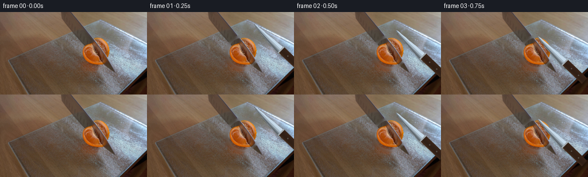
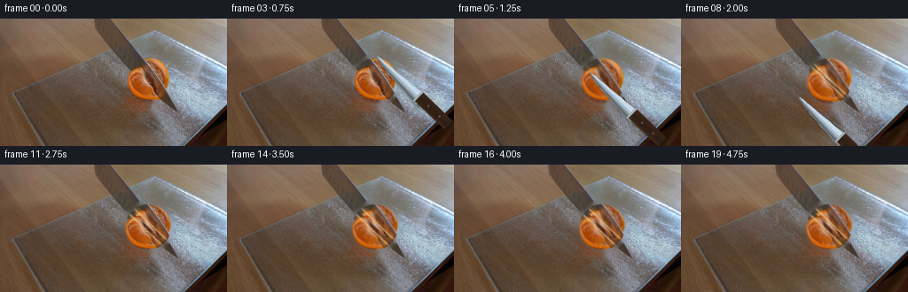

CODING AGENTS AS PIXEL WORLD MODELS
traex/DeepSeek-V4.1-Flash · 0040
点击播放 · 原生 RGB 像素
此结果可播放，但该运行尚未通过最终提交审核。页面展示不代表评测通过。
逐轮保存的候选
回放视频、检查图与代码变化。
每份候选均可单独播放。实际图片检查记录在下方工具轨迹中。
候选 01播放与检查图
点击播放 · 原生 RGB 像素


展开代码变化
--- 上一保存版本
+++ 本次保存版本
@@ -0,0 +1,319 @@
+from pathlib import Path
+
+import cv2
+import numpy as np
+from PIL import Image
+
+import artifact_io
+
+
+CASE_DIR = Path(__file__).resolve().parent
+FRAME_COUNT = 20
+HEIGHT = 144
+WIDTH = 256
+
+# The tangerine's visible cut face in the source frame.
+FRUIT_CENTER = np.array([166.5, 70.0], dtype=np.float32)
+FRUIT_RADIUS = 26.0
+
+# Knife tip positions. The blade points down-right from the tip and sweeps
+# through the fruit along the perpendicular direction.
+KNIFE_TIPS = [
+ None,
+ np.array([187.0, 21.0]),
+ np.array([178.0, 32.0]),
+ np.array([169.0, 43.0]),
+ np.array([161.0, 53.0]),
+ np.array([154.0, 62.0]),
+ np.array([147.0, 71.0]),
+ np.array([140.0, 80.0]),
+ np.array([133.0, 89.0]),
+ np.array([126.0, 98.0]),
+ np.array([119.0, 107.0]),
+ None,
+ None,
+ None,
+ None,
+ None,
+ None,
+ None,
+ None,
+ None,
+]
+
+CUT_PROGRESS = [
+ 0.0, 0.0, 0.0, 0.03, 0.16, 0.38, 0.61, 0.80, 0.94, 1.0,
+ 1.0, 1.0, 1.0, 1.0, 1.0, 1.0, 1.0, 1.0, 1.0, 1.0,
+]
+
+SEPARATION = [
+ 0.0, 0.0, 0.0, 0.0, 0.25, 0.55, 0.95, 1.55, 2.25, 3.0,
+ 3.7, 4.15, 4.45, 4.62, 4.70, 4.74, 4.77, 4.79, 4.80, 4.80,
+]
+
+
+def smoothstep(edge0, edge1, value):
+ t = np.clip((value - edge0) / (edge1 - edge0), 0.0, 1.0)
+ return t * t * (3.0 - 2.0 * t)
+
+
+def make_plate(image):
+ """Reconstruct the board hidden by the fruit for later separation."""
+ mask = np.zeros((HEIGHT, WIDTH), dtype=np.uint8)
+ center = tuple(np.round(FRUIT_CENTER).astype(int))
+ cv2.circle(mask, center, 31, 255, -1)
+ plate = cv2.inpaint(image, mask, 7, cv2.INPAINT_TELEA)
+
+ # Continue the broad cool reflection through the old fruit footprint.
+ yy, xx = np.indices((HEIGHT, WIDTH), dtype=np.float32)
+ distance = np.sqrt((xx - FRUIT_CENTER[0]) ** 2 + (yy - FRUIT_CENTER[1]) ** 2)
+ inside = distance < 31.0
+ cool = np.empty_like(plate)
+ cool[:, :, 0] = 132.0 + 0.28 * (xx - 166.0) - 0.10 * (yy - 70.0)
+ cool[:, :, 1] = 139.0 + 0.22 * (xx - 166.0) - 0.08 * (yy - 70.0)
+ cool[:, :, 2] = 145.0 + 0.16 * (xx - 166.0) - 0.05 * (yy - 70.0)
+ feather = smoothstep(31.0, 19.0, distance)
+ blend = inside.astype(np.float32) * feather * 0.42
+ plate = plate.astype(np.float32) * (1.0 - blend[..., None]) + cool * blend[..., None]
+ return np.clip(plate, 0, 255).astype(np.uint8)
+
+
+def fruit_alpha():
+ yy, xx = np.indices((HEIGHT, WIDTH), dtype=np.float32)
+ distance = np.sqrt((xx - FRUIT_CENTER[0]) ** 2 + (yy - FRUIT_CENTER[1]) ** 2)
+ return 1.0 - smoothstep(FRUIT_RADIUS - 1.1, FRUIT_RADIUS + 0.7, distance)
+
+
+def sample_translated(image, shift):
+ """Bilinearly sample an image at pixel - shift."""
+ yy, xx = np.indices((HEIGHT, WIDTH), dtype=np.float32)
+ return cv2.remap(
+ image,
+ xx - float(shift[0]),
+ yy - float(shift[1]),
+ interpolation=cv2.INTER_LINEAR,
+ borderMode=cv2.BORDER_REFLECT_101,
+ )
+
+
+def composite_fruit(frame, source, split, cut_progress):
+ base_alpha = fruit_alpha()
+ if cut_progress <= 0.0 and split <= 0.0:
+ return (
+ frame.astype(np.float32) * (1.0 - base_alpha[..., None])
+ + source.astype(np.float32) * base_alpha[..., None]
+ )
+
+ axis = np.array([0.72, 0.69], dtype=np.float32)
+ axis /= np.linalg.norm(axis)
+ normal = np.array([-axis[1], axis[0]], dtype=np.float32)
+ yy, xx = np.indices((HEIGHT, WIDTH), dtype=np.float32)
+ signed = (xx - FRUIT_CENTER[0]) * normal[0] + (yy - FRUIT_CENTER[1]) * normal[1]
+
+ # The blade enters at negative signed distance and advances across the face.
+ reach = -FRUIT_RADIUS + 2.0 * FRUIT_RADIUS * cut_progress
+ cut_alpha = 1.0 - smoothstep(reach - 0.8, reach + 1.2, signed)
+ cut_alpha *= smoothstep(-0.6, 0.6, signed + FRUIT_RADIUS + 1.0)
+
+ left_shift = -normal * split
+ right_shift = normal * split
+ left_src = sample_translated(source, left_shift)
+ right_src = sample_translated(source, right_shift)
+ side = smoothstep(-0.8, 0.8, signed)
+
+ left_alpha = base_alpha * (cut_alpha + (1.0 - cut_alpha)) * (1.0 - side)
+ right_alpha = base_alpha * (cut_alpha + (1.0 - cut_alpha)) * side
+
+ result = frame.astype(np.float32)
+ result = result * (1.0 - left_alpha[..., None]) + left_src.astype(np.float32) * left_alpha[..., None]
+ result = result * (1.0 - right_alpha[..., None]) + right_src.astype(np.float32) * right_alpha[..., None]
+
+ # Freshly exposed pulp edges: a narrow pith line with warm orange just
+ # inside it. Coordinates are in the unshifted source face.
+ for sign, shift in ((-1.0, left_shift), (1.0, right_shift)):
+ sx = xx - shift[0]
+ sy = yy - shift[1]
+ s_src = (sx - FRUIT_CENTER[0]) * normal[0] + (sy - FRUIT_CENTER[1]) * normal[1]
+ radial = np.sqrt((sx - FRUIT_CENTER[0]) ** 2 + (sy - FRUIT_CENTER[1]) ** 2)
+ edge = np.exp(-((s_src + sign * 0.15) / 1.15) ** 2)
+ edge *= smoothstep(FRUIT_RADIUS + 1.0, FRUIT_RADIUS - 4.0, radial)
+ edge *= smoothstep(0.0, 2.5, split)
+ pith = np.array([236.0, 207.0, 151.0], dtype=np.float32)
+ result = result * (1.0 - 0.62 * edge[..., None]) + pith * (0.62 * edge[..., None])
+
+ warm = np.exp(-((s_src - sign * 2.3) / 1.8) ** 2)
+ warm *= smoothstep(FRUIT_RADIUS + 1.0, FRUIT_RADIUS - 6.0, radial)
+ warm *= smoothstep(0.0, 2.5, split)
+ pulp = np.array([235.0, 126.0, 31.0], dtype=np.float32)
+ result = result * (1.0 - 0.32 * warm[..., None]) + pulp * (0.32 * warm[..., None])
+
+ return result
+
+
+def add_droplets(frame, frame_index):
+ if frame_index < 9:
+ return frame
+ result = frame.astype(np.float32)
+ yy, xx = np.indices((HEIGHT, WIDTH), dtype=np.float32)
+ amount = min(1.0, (frame_index - 8) / 5.0)
+ droplets = [
+ (156.5, 82.0, 1.45, 1.05, 0.00),
+ (160.0, 88.5, 1.05, 1.55, 0.25),
+ (173.5, 88.0, 1.20, 0.85, 0.10),
+ (177.5, 79.0, 0.90, 1.20, 0.35),
+ (150.5, 73.0, 0.75, 0.95, 0.55),
+ (183.5, 69.5, 0.80, 0.70, 0.42),
+ (165.0, 93.0, 0.75, 0.65, 0.18),
+ ]
+ for i, (cx, cy, rx, ry, delay) in enumerate(droplets):
+ local = np.clip((amount - delay) / max(0.15, 1.0 - delay), 0.0, 1.0)
+ if local <= 0:
+ continue
+ xx0 = cx + 0.45 * np.sin(i * 2.2)
+ yy0 = cy + (1.0 - local) * 2.2
+ blob = np.exp(-(((xx - xx0) / (rx * local + 0.2)) ** 2 + ((yy - yy0) / (ry * local + 0.2)) ** 2) * 1.8)
+ highlight = np.exp(-(((xx - xx0 + 0.35) / 0.42) ** 2 + ((yy - yy0 + 0.35) / 0.42) ** 2) * 1.2)
+ juice = np.array([218.0, 103.0, 16.0], dtype=np.float32)
+ shine = np.array([249.0, 199.0, 91.0], dtype=np.float32)
+ result = result * (1.0 - 0.64 * blob[..., None]) + juice * (0.64 * blob[..., None])
+ result = result * (1.0 - 0.55 * highlight[..., None]) + shine * (0.55 * highlight[..., None])
+ return result
+
+
+def knife_mask_alpha(polygon):
+ canvas = np.zeros((HEIGHT, WIDTH), dtype=np.uint8)
+ cv2.fillPoly(canvas, [np.round(polygon).astype(np.int32)], 255, lineType=cv2.LINE_AA)
+ return canvas.astype(np.float32) / 255.0
+
+
+def draw_knife(frame, tip, frame_index):
+ if tip is None:
+ return frame
+
+ axis = np.array([0.72, 0.69], dtype=np.float32)
+ axis /= np.linalg.norm(axis)
+ normal = np.array([-axis[1], axis[0]], dtype=np.float32)
+ tip = tip.astype(np.float32)
+
+ blade_length = 73.0
+ handle_start = 68.0
+ handle_end = 111.0
+ us = np.linspace(0.0, blade_length, 14)
+ edge_width = 0.7 + 8.4 * (us / blade_length) ** 0.72
+ spine_width = 0.55 + 4.8 * (us / blade_length) ** 0.9
+ lower = np.array([tip + axis * u + normal * w for u, w in zip(us, edge_width)])
+ upper = np.array([tip + axis * u - normal * w for u, w in zip(us, spine_width)])
+ blade_poly = np.vstack([tip[None, :], lower, upper[::-1]])
+ blade_alpha = knife_mask_alpha(blade_poly)
+
+ handle_poly = np.array(
+ [
+ tip + axis * (handle_start - 2.0) - normal * 6.4,
+ tip + axis * handle_end - normal * 6.1,
+ tip + axis * handle_end + normal * 5.4,
+ tip + axis * (handle_start - 2.0) + normal * 6.4,
+ ],
+ dtype=np.float32,
+ )
+ handle_alpha = knife_mask_alpha(handle_poly)
+ bolster_poly = np.array(
+ [
+ tip + axis * (handle_start - 5.0) - normal * 6.8,
+ tip + axis * (handle_start + 1.0) - normal * 6.5,
+ tip + axis * (handle_start + 1.0) + normal * 6.7,
+ tip + axis * (handle_start - 5.0) + normal * 7.0,
+ ],
+ dtype=np.float32,
+ )
+ bolster_alpha = knife_mask_alpha(bolster_poly)
+
+ yy, xx = np.indices((HEIGHT, WIDTH), dtype=np.float32)
+ shadow_canvas = np.zeros((HEIGHT, WIDTH), dtype=np.uint8)
+ cv2.fillPoly(
+ shadow_canvas,
+ [np.round(blade_poly + np.array([2.2, 3.0], dtype=np.float32)).astype(np.int32)],
+ 255,
+ lineType=cv2.LINE_AA,
+ )
+ cv2.fillPoly(
+ shadow_canvas,
+ [np.round(handle_poly + np.array([2.2, 3.0], dtype=np.float32)).astype(np.int32)],
+ 255,
+ lineType=cv2.LINE_AA,
+ )
+ shadow = cv2.GaussianBlur(shadow_canvas.astype(np.float32) / 255.0, (0, 0), 1.35)
+ result = frame.astype(np.float32)
+ result = result * (1.0 - 0.30 * shadow[..., None]) + np.array([24.0, 20.0, 18.0]) * (0.30 * shadow[..., None])
+
+ rel_x = xx - tip[0]
+ rel_y = yy - tip[1]
+ u = rel_x * axis[0] + rel_y * axis[1]
+ v = rel_x * normal[0] + rel_y * normal[1]
+ width = 0.7 + 8.4 * np.clip(u / blade_length, 0.0, 1.0) ** 0.72
+ across = np.clip((v + 0.7) / (width + 0.7), 0.0, 1.0)
+ along = np.clip(u / blade_length, 0.0, 1.0)
+
+ base = np.array([150.0, 162.0, 171.0], dtype=np.float32)
+ spine = np.array([89.0, 103.0, 116.0], dtype=np.float32)
+ edge = np.array([221.0, 232.0, 236.0], dtype=np.float32)
+ blade_rgb = base[None, None, :] * (1.0 - 0.56 * across[..., None])
+ blade_rgb += spine[None, None, :] * (0.56 * (1.0 - across[..., None]))
+ edge_band = smoothstep(0.84, 0.98, across)
+ blade_rgb = blade_rgb * (1.0 - 0.36 * edge_band[..., None]) + edge * (0.36 * edge_band[..., None])
+
+ reflection = np.exp(-((across - (0.40 + 0.10 * np.sin(5.0 * along + frame_index * 0.16))) / 0.075) ** 2)
+ reflection *= smoothstep(0.05, 0.18, along) * (1.0 - smoothstep(0.86, 1.0, along))
+ blade_rgb = blade_rgb * (1.0 - 0.34 * reflection[..., None]) + np.array([224.0, 235.0, 240.0]) * (0.34 * reflection[..., None])
+ cool_band = np.exp(-((across - 0.20) / 0.10) ** 2) * 0.18
+ blade_rgb = blade_rgb * (1.0 - cool_band[..., None]) + np.array([116.0, 144.0, 163.0]) * cool_band[..., None]
+ streak = 1.8 * np.sin(38.0 * v + 2.4 * np.sin(5.0 * u))
+ blade_rgb += streak[..., None] * np.array([0.55, 0.62, 0.68])
+ blade_rgb = np.clip(blade_rgb, 0, 255)
+ result = result * (1.0 - blade_alpha[..., None]) + blade_rgb * blade_alpha[..., None]
+
+ bolster_rgb = np.broadcast_to(np.array([165.0, 174.0, 180.0], dtype=np.float32), (HEIGHT, WIDTH, 3))
+ result = result * (1.0 - bolster_alpha[..., None]) + bolster_rgb * bolster_alpha[..., None]
+
+ handle_rgb = np.empty((HEIGHT, WIDTH, 3), dtype=np.float32)
+ handle_across = np.clip((v + 6.4) / 12.8, 0.0, 1.0)
+ handle_rgb[:] = np.array([38.0, 25.0, 18.0])
+ handle_rgb += (1.0 - handle_across[..., None]) * np.array([20.0, 12.0, 7.0])
+ handle_rgb += (handle_across[..., None] ** 5.0) * np.array([31.0, 20.0, 11.0])
+ result = result * (1.0 - handle_alpha[..., None]) + handle_rgb * handle_alpha[..., None]
+
+ for rivet_u in (80.0, 97.0):
+ cx = tip[0] + axis[0] * rivet_u
+ cy = tip[1] + axis[1] * rivet_u
+ dist = np.sqrt((xx - cx) ** 2 + (yy - cy) ** 2)
+ rivet = np.exp(-(dist / 1.35) ** 4) * handle_alpha
+ result = result * (1.0 - 0.62 * rivet[..., None]) + np.array([116.0, 116.0, 111.0]) * (0.62 * rivet[..., None])
+
+ return np.clip(result, 0, 255)
+
+
+def generate():
+ first = np.asarray(Image.open(CASE_DIR / "first_frame.png").convert("RGB"), dtype=np.uint8)
+ plate = make_plate(first)
+ frames = []
+
+ for index in range(FRAME_COUNT):
+ if index == 0:
+ frame = first.copy()
+ else:
+ frame = plate.astype(np.float32)
+ frame = composite_fruit(frame, first, SEPARATION[index], CUT_PROGRESS[index])
+ frame = add_droplets(frame, index)
+ frame = draw_knife(frame, KNIFE_TIPS[index], index)
+ frame = np.clip(frame, 0, 255).astype(np.uint8)
+ frames.append(frame)
+
+ frames = np.stack(frames, axis=0)
+ assert frames.shape == (20, 144, 256, 3)
+ assert frames.dtype == np.uint8
+ assert np.array_equal(frames[0], first)
+ artifact_io.save(frames, CASE_DIR)
+ return frames
+
+
+if __name__ == "__main__":
+ generate()
候选 02播放与检查图
点击播放 · 原生 RGB 像素

展开代码变化
--- 上一保存版本
+++ 本次保存版本
@@ -20,35 +20,30 @@
# through the fruit along the perpendicular direction.
KNIFE_TIPS = [
None,
- np.array([187.0, 21.0]),
- np.array([178.0, 32.0]),
- np.array([169.0, 43.0]),
- np.array([161.0, 53.0]),
- np.array([154.0, 62.0]),
- np.array([147.0, 71.0]),
- np.array([140.0, 80.0]),
- np.array([133.0, 89.0]),
- np.array([126.0, 98.0]),
- np.array([119.0, 107.0]),
- None,
- None,
- None,
- None,
- None,
- None,
- None,
- None,
- None,
+ np.array([203.0, 5.0]),
+ np.array([194.0, 14.0]),
+ np.array([185.0, 23.0]),
+ np.array([176.0, 32.0]),
+ np.array([167.0, 41.0]),
+ np.array([159.0, 49.0]),
+ np.array([151.0, 57.0]),
+ np.array([144.0, 64.0]),
+ np.array([137.0, 71.0]),
+ np.array([130.0, 78.0]),
+ np.array([123.0, 85.0]),
+ np.array([116.0, 92.0]),
+ np.array([109.0, 99.0]),
+ np.array([102.0, 106.0]),
+ np.array([95.0, 113.0]),
+ np.array([88.0, 120.0]),
+ np.array([81.0, 127.0]),
+ np.array([74.0, 134.0]),
+ np.array([67.0, 141.0]),
]
-CUT_PROGRESS = [
- 0.0, 0.0, 0.0, 0.03, 0.16, 0.38, 0.61, 0.80, 0.94, 1.0,
- 1.0, 1.0, 1.0, 1.0, 1.0, 1.0, 1.0, 1.0, 1.0, 1.0,
-]
-
SEPARATION = [
- 0.0, 0.0, 0.0, 0.0, 0.25, 0.55, 0.95, 1.55, 2.25, 3.0,
- 3.7, 4.15, 4.45, 4.62, 4.70, 4.74, 4.77, 4.79, 4.80, 4.80,
+ 0.0, 0.0, 0.0, 0.0, 0.0, 0.0, 0.22, 0.65, 1.25, 2.10,
+ 3.05, 3.75, 4.35, 4.85, 5.25, 5.55, 5.80, 6.00, 6.15, 6.25,
]
@@ -96,7 +91,7 @@
)
-def composite_fruit(frame, source, split, cut_progress):
+def composite_fruit(frame, source, split, cut_progress, tip):
base_alpha = fruit_alpha()
if cut_progress <= 0.0 and split <= 0.0:
return (
@@ -110,10 +105,14 @@
yy, xx = np.indices((HEIGHT, WIDTH), dtype=np.float32)
signed = (xx - FRUIT_CENTER[0]) * normal[0] + (yy - FRUIT_CENTER[1]) * normal[1]
- # The blade enters at negative signed distance and advances across the face.
- reach = -FRUIT_RADIUS + 2.0 * FRUIT_RADIUS * cut_progress
- cut_alpha = 1.0 - smoothstep(reach - 0.8, reach + 1.2, signed)
- cut_alpha *= smoothstep(-0.6, 0.6, signed + FRUIT_RADIUS + 1.0)
+ # The visible blade front is the plane through its tip. Only pixels behind
+ # the edge have been cut; the remainder is still one intact fruit face.
+ if tip is None:
+ cut_alpha = np.ones_like(signed)
+ else:
+ tip_signed = (tip[0] - FRUIT_CENTER[0]) * normal[0] + (tip[1] - FRUIT_CENTER[1]) * normal[1]
+ cut_alpha = 1.0 - smoothstep(tip_signed - 0.7, tip_signed + 0.7, signed)
+ cut_alpha *= smoothstep(-0.6, 0.6, signed + FRUIT_RADIUS + 1.0)
left_shift = -normal * split
right_shift = normal * split
@@ -121,8 +120,8 @@
right_src = sample_translated(source, right_shift)
side = smoothstep(-0.8, 0.8, signed)
- left_alpha = base_alpha * (cut_alpha + (1.0 - cut_alpha)) * (1.0 - side)
- right_alpha = base_alpha * (cut_alpha + (1.0 - cut_alpha)) * side
+ left_alpha = base_alpha * (1.0 - side)
+ right_alpha = base_alpha * side
result = frame.astype(np.float32)
result = result * (1.0 - left_alpha[..., None]) + left_src.astype(np.float32) * left_alpha[..., None]
@@ -137,13 +136,13 @@
radial = np.sqrt((sx - FRUIT_CENTER[0]) ** 2 + (sy - FRUIT_CENTER[1]) ** 2)
edge = np.exp(-((s_src + sign * 0.15) / 1.15) ** 2)
edge *= smoothstep(FRUIT_RADIUS + 1.0, FRUIT_RADIUS - 4.0, radial)
- edge *= smoothstep(0.0, 2.5, split)
+ edge *= smoothstep(0.0, 2.5, split) * cut_alpha
pith = np.array([236.0, 207.0, 151.0], dtype=np.float32)
result = result * (1.0 - 0.62 * edge[..., None]) + pith * (0.62 * edge[..., None])
warm = np.exp(-((s_src - sign * 2.3) / 1.8) ** 2)
warm *= smoothstep(FRUIT_RADIUS + 1.0, FRUIT_RADIUS - 6.0, radial)
- warm *= smoothstep(0.0, 2.5, split)
+ warm *= smoothstep(0.0, 2.5, split) * cut_alpha
pulp = np.array([235.0, 126.0, 31.0], dtype=np.float32)
result = result * (1.0 - 0.32 * warm[..., None]) + pulp * (0.32 * warm[..., None])
@@ -301,7 +300,7 @@
frame = first.copy()
else:
frame = plate.astype(np.float32)
- frame = composite_fruit(frame, first, SEPARATION[index], CUT_PROGRESS[index])
+ frame = composite_fruit(frame, first, SEPARATION[index], 0.0, KNIFE_TIPS[index])
frame = add_droplets(frame, index)
frame = draw_knife(frame, KNIFE_TIPS[index], index)
frame = np.clip(frame, 0, 255).astype(np.uint8)
候选 03播放与检查图
可观测工具轨迹
实际执行的命令与返回图片。
命令 1exit 0
/bin/bash -c "pwd && rg --files -g '"'!*__pycache__*'"' | sort | sed -n '1,200p'"
命令 2exit 0
/bin/bash -c "sed -n '1,240p' prompt.txt"
命令 3exit 0
/bin/bash -c "sed -n '1,280p' GENERATION_RULES.md"
命令 4exit 0
/bin/bash -c "find . -maxdepth 2 -type f -printf '%p\\t%s bytes\\n' | sort"
命令 5exit 0
/bin/bash -c "sed -n '1,260p' artifact_io.py"
命令 6exit 0
/bin/bash -c "sed -n '1,260p' player_template.html"
命令 7exit 0
/bin/bash -c "python - <<'PY'
from PIL import Image
import numpy as np
im=Image.open('first_frame.png').convert('RGB')
a=np.asarray(im)
print(im.size, im.mode, a.shape, a.dtype)
print('min/max/mean',a.min((0,1)),a.max((0,1)),a.mean((0,1)))
# coarse 32x18 mean grid as hex
for y in range(18):
row=[]
for x in range(32):
p=a[int(y*a.shape[0]/18):int((y+1)*a.shape[0]/18),int(x*a.shape[1]/32):int((x+1)*a.shape[1]/32)].mean((0,1)).astype(int)
row.append('%02x%02x%02x'%tuple(p))
print(' '.join(row))
PY"命令 8exit 0
/bin/bash -c "python - <<'PY'
try:
import cv2; print('cv2',cv2.__version__)
except Exception as e: print('no cv2',e)
try:
import scipy; print('scipy',scipy.__version__)
except Exception as e: print('no scipy',e)
PY
ffmpeg -version | head -n 2"命令 9exit 0
/bin/bash -c "python - <<'PY'
import cv2, numpy as np
im=cv2.imread('first_frame.png'); hsv=cv2.cvtColor(im,cv2.COLOR_BGR2HSV)
# orange masks H OpenCV around 0-30 (red-orange)
for name,m in [
('orange',((hsv[:,:,0]<30)&(hsv[:,:,1]>90)&(hsv[:,:,2]>70))),
('orange2',((hsv[:,:,0]<25)&(hsv[:,:,1]>130)&(hsv[:,:,2]>80))),
('brightorange',((hsv[:,:,0]<20)&(hsv[:,:,1]>150)&(hsv[:,:,2]>100))),
('teal',((hsv[:,:,0]>80)&(hsv[:,:,0]<110)&(hsv[:,:,1]>40)&(hsv[:,:,2]>70))),
('bright',(hsv[:,:,2]>150)),
('dark',(hsv[:,:,2]<50)),
]:
m=(m.astype(np.uint8)*255)
n,lab,st,c=cv2.connectedComponentsWithStats(m)
comps=sorted([tuple(map(int,x)) for x in st[1:] if x[4]>10], key=lambda x:x[4], reverse=True)
print('\\n',name,'total',int(m.sum()/255),'bbox all', cv2.boundingRect(m))
print(comps[:20])
PY"命令 10exit 0
/bin/bash -c "python - <<'PY'
from PIL import Image
import numpy as np
from sklearn.cluster import KMeans
im=np.asarray(Image.open('first_frame.png').convert('RGB'))
# kmeans 10 colors
x=im.reshape(-1,3)
km=KMeans(10,random_state=4,n_init=4).fit(x[::4])
lab=km.predict(x).reshape(im.shape[:2])
cent=km.cluster_centers_.astype(int)
order=np.argsort(cent.mean(1))
chars='@%#*+=-:. '
print('clusters by luminance:')
for i in order: print(chars[list(order).index(i)],i,cent[i],int((lab==i).sum()),'bbox', (np.where(lab==i)[1].min(),np.where(lab==i)[0].min(),np.where(lab==i)[1].max(),np.where(lab==i)[0].max()))
# map 2x2 downsample majority
H,W=lab.shape
print('\\nKMEANS map')
for y in range(0,H,3):
s=''
for x in range(0,W,2):
vals,cts=np.unique(lab[y:y+3,x:x+2],return_counts=True)
v=vals[cts.argmax()]
s+=chars[list(order).index(v)]
print(s)
# HSV categories map 2x2
import cv2
hsv=cv2.cvtColor(im,cv2.COLOR_RGB2HSV)
cat=np.zeros((H,W),np.uint8)
# categories: o orange, r red-orange, b brown wood, d dark, w white/glass, c cyan/blue metal, g gray, k black
cat[(hsv[:,:,0]<22)&(hsv[:,:,1]>110)&(hsv[:,:,2]>90)]=1 # o
cat[(hsv[:,:,0]<15)&(hsv[:,:,1]>160)&(hsv[:,:,2]>120)]=2 # bright orange
cat[(hsv[:,:,0]>=70)&(hsv[:,:,0]<115)&(hsv[:,:,1]>30)&(hsv[:,:,2]>70)]=3 # blue
cat[(hsv[:,:,1]<35)&(hsv[:,:,2]>145)]=4 # white
cat[(hsv[:,:,2]<55)]=5 # dark
cat[(hsv[:,:,0]>15)&(hsv[:,:,0]<55)&(hsv[:,:,1]>35)&(hsv[:,:,2]>35)]=6 # brown
chars2='.obwcdG'
print('\\nCATEGORY map . background o orange b bright-orange w white c cyan d dark G brown')
for y in range(0,H,2):
s=''
for x in range(0,W,2):
vals,cts=np.unique(cat[y:y+2,x:x+2],return_counts=True)
v=vals[cts.argmax()]
s+=chars2[v]
print(s)
PY"命令 11exit 0
/bin/bash -c "python - <<'PY'
import cv2, numpy as np
im=cv2.imread('first_frame.png')
g=cv2.cvtColor(im,cv2.COLOR_BGR2GRAY)
# canny map x110:256, y20:144, 1 char/pixel using 2 chars horizontal? print every 1 x, 1 y? max width 146
edge=cv2.Canny(g,35,90)
hsv=cv2.cvtColor(im,cv2.COLOR_BGR2HSV)
print('EDGE map x110..255, y20..143')
print(' '+''.join(str((110+i)//100%10) for i in range(0,146)))
print(' '+''.join(str((110+i)//10%10) for i in range(0,146)))
print(' '+''.join(str((110+i)%10) for i in range(0,146)))
for y in range(20,144):
s=''
for x in range(110,256):
b,gg,r=im[y,x]; h,ss,v=hsv[y,x]
if edge[y,x]: c='#'
elif h<22 and ss>150 and v>100: c='O'
elif h<25 and ss>90 and v>70: c='o'
elif h>75 and h<115 and ss>25 and v>70: c='c'
elif v<45: c='@'
elif ss<30 and v>170: c='W'
elif ss<45 and v>120: c='+'
elif h>=15 and h<55 and ss>30: c='b'
elif v>110: c='-'
else: c='.'
s+=c
print(f'{y:3d} '+s)
PY"命令 12exit 0
/bin/bash -c "python - <<'PY'
import cv2, numpy as np
im=cv2.imread('first_frame.png')
g=cv2.cvtColor(im,cv2.COLOR_BGR2GRAY)
for lo,hi in [(20,60),(40,100),(80,160),(120,220)]:
e=cv2.Canny(g,lo,hi)
lines=cv2.HoughLinesP(e,1,np.pi/180,threshold=18,minLineLength=18,maxLineGap=5)
print('\\nCanny',lo,hi,'lines',None if lines is None else len(lines))
if lines is not None:
arr=[]
for l in lines[:,0]:
x1,y1,x2,y2=map(int,l); ln=((x2-x1)**2+(y2-y1)**2)**.5; ang=np.degrees(np.arctan2(y2-y1,x2-x1))
arr.append((round(ln,1),round(ang,1),x1,y1,x2,y2))
for v in sorted(arr,reverse=True)[:30]: print(v)
# HSV means for key rectangles
hsv=cv2.cvtColor(im,cv2.COLOR_BGR2HSV)
regions={
'wood_left':(0,0,140,144), 'glass':(145,0,256,95), 'fruit':(140,42,195,95),
'topright':(190,0,256,60),'midright':(190,55,225,110),'handle':(215,98,256,144),
'blade?':(175,60,235,105),'boardlower':(145,95,215,144)
}
for name,(x1,y1,x2,y2) in regions.items():
r=im[y1:y2,x1:x2]; h=hsv[y1:y2,x1:x2]
print(name,'BGRmean',r.mean((0,1)).round(1),'HSVmean',h.mean((0,1)).round(1),'range',r.min((0,1)),r.max((0,1)))
PY"命令 13exit 0
/bin/bash -c "python - <<'PY'
from PIL import Image
import numpy as np, cv2
im=np.asarray(Image.open('first_frame.png').convert('RGB'))
hsv=cv2.cvtColor(im,cv2.COLOR_RGB2HSV)
# region x125:210 y30:110; 1 char per pixel x, 1 y
# char by handcrafted hues
for y in range(30,111):
s=''
for x in range(125,211):
r,g,b=map(int,im[y,x]); h,ss,v=map(int,hsv[y,x])
if h<12 and ss>160 and v>120: c='R'
elif h<22 and ss>130 and v>100: c='O'
elif h<30 and ss>80 and v>70: c='o'
elif h<45 and ss>50 and v>55: c='b'
elif h>90 and h<120 and ss>25: c='c'
elif v>195: c='W'
elif v>165: c='w'
elif v>130: c='+'
elif v>100: c='-'
elif v>60: c='.'
else: c='@'
s+=c
print(f'{y:3d} '+s)
PY"命令 14exit 0
/bin/bash -c "python - <<'PY'
from PIL import Image
import numpy as np
im=np.asarray(Image.open('first_frame.png').convert('RGB'))
# print 4x4 avg color as HSV categorical, x120..256 y20..120, each char 2x2
import cv2
hsv=cv2.cvtColor(im,cv2.COLOR_RGB2HSV)
# generate quantized chars based on hue, sat, val
for y in range(20,124,2):
s=''
for x in range(120,256,2):
h,ss,v=hsv[y:y+2,x:x+2].mean((0,1)); r,g,b=im[y:y+2,x:x+2].mean((0,1))
if v<45: c='@'
elif ss<15 and v>210:c='W'
elif ss<20 and v>170:c='w'
elif ss<25 and v>130:c='+'
elif h<10 and ss>130 and v>90:c='R'
elif h<20 and ss>120 and v>100:c='O'
elif h<28 and ss>75 and v>70:c='o'
elif h<42 and ss>35 and v>45:c='b'
elif h>=70 and h<125 and ss>25 and v>100:c='C'
elif h>=70 and h<125 and ss>25:c='c'
elif v>120:c='-'
elif v>80:c='.'
else:c=','
s+=c
print(f'{y:3d} '+s)
PY"命令 15exit 0
/bin/bash -c "python - <<'PY'
import cv2, numpy as np
im=cv2.imread('first_frame.png')
hsv=cv2.cvtColor(im,cv2.COLOR_BGR2HSV)
for thr in [35,45,55,65,75]:
m=((hsv[:,:,2]<thr).astype(np.uint8)*255)
n,lab,st,c=cv2.connectedComponentsWithStats(m)
comps=sorted([tuple(map(int,x)) for x in st[1:] if x[4]>20],key=lambda z:z[4],reverse=True)
print('\\nthr',thr,comps[:8])
for i in range(1,n):
if st[i,4]>200:
ys,xs=np.where(lab==i)
print('comp',i,'area',len(xs),'bbox',st[i,:4].tolist(),'cent',c[i].round(1).tolist())
for y in range(int(ys.min()),int(ys.max())+1,5):
xx=xs[ys==y]
if len(xx): print(' y',y,'x',int(xx.min()),int(xx.max()))
PY"命令 16exit 0
/bin/bash -c "python - <<'PY'
import numpy as np, cv2
from PIL import Image
im=cv2.imread('first_frame.png'); hsv=cv2.cvtColor(im,cv2.COLOR_BGR2HSV)
# masks of potential metal: low sat or cool hue, high val, in right x145+
y,x=np.indices(hsv.shape[:2]); h,s,v=cv2.split(hsv)
mask=((x>145)&(((s<55)&(v>105))|((h>=60)&(h<=120)&(s<90)&(v>100)))).astype(np.uint8)*255
mask=cv2.morphologyEx(mask,cv2.MORPH_CLOSE,np.ones((3,3),np.uint8))
n,lab,st,c=cv2.connectedComponentsWithStats(mask)
for i in sorted(range(1,n),key=lambda i:st[i,4],reverse=True)[:10]:
if st[i,4]<100:continue
ys,xs=np.where(lab==i)
print('area',st[i,4],'bbox',st[i,:4].tolist(),'cent',c[i].round(1))
# rows minmax every 5
for yy in range(ys.min(),ys.max()+1,5):
xx=xs[ys==yy]
if len(xx): print(yy,int(xx.min()),int(xx.max()))
# Print local RGB at grid 5 pix x150..256 y30..130
print('\\nRGB grid')
for yy in range(30,131,5):
row=[]
for xx in range(150,256,5):
p=im[yy:yy+5,xx:xx+5].mean((0,1))[::-1].astype(int)
row.append('%02x%02x%02x'%tuple(p))
print(f'{yy:3d}', ' '.join(row))
PY"命令 17exit 0
/bin/bash -c "python - <<'PY'
import cv2, numpy as np
im=cv2.imread('first_frame.png'); hsv=cv2.cvtColor(im,cv2.COLOR_BGR2HSV)
# HSV samples selected grid, labeled, print
pts=[(145,45),(155,50),(165,55),(175,55),(185,50),(195,45),(205,50),(215,60),(225,70),(235,80),(245,90),(250,100),(210,80),(220,90),(230,100),(240,110),(250,120),(200,110),(210,120),(220,130),(230,140),(180,100),(190,110),(200,120),(170,90),(160,80),(150,70),(140,60),(130,50),(120,45),(110,40),(100,35),(90,30),(80,25),(70,20)]
for x,y in pts:
b,g,r=map(int,im[y,x]); h,s,v=map(int,hsv[y,x]); print((x,y),'RGB',(r,g,b),'HSV',(h,s,v))
PY"命令 18exit 0
/bin/bash -c "python - <<'PY'
from PIL import Image
import numpy as np, cv2
im=np.asarray(Image.open('first_frame.png').convert('RGB'))
# edges near likely fruit
g=cv2.cvtColor(im,cv2.COLOR_RGB2GRAY); e=cv2.Canny(g,45,110)
# boundary candidate: pixels around x125:195 y40:105 with edge
ys,xs=np.where(e[35:110,120:200]>0); xs+=120; ys+=35
# Print edge coords min/max per row for right boundary x>175 and left boundary x<155
print('row edge ranges x130..205')
for yy in range(40,105):
xx=xs[ys==yy]
if len(xx):
print(yy, sorted(set(map(int,xx))))
# Orange region row ranges with stricter mask based color orange red, require r>g*1.25 etc
r=im[:,:,0].astype(int); gg=im[:,:,1].astype(int); b=im[:,:,2].astype(int)
m=(r>g+18)&(r>b+40)&(r>100)&(np.arange(im.shape[0])[:,None]>35)&(np.arange(im.shape[0])[:,None]<105)&(np.arange(im.shape[1])[None,:]>135)&(np.arange(im.shape[1])[None,:]<195)
print('\\norange row ranges')
for yy in range(40,105):
xx=np.where(m[yy])[0]
if len(xx)>2: print(yy,int(xx.min()),int(xx.max()),len(xx))
PY"命令 19exit 0
/bin/bash -c "python - <<'PY'
import numpy as np, cv2
from PIL import Image
im=np.asarray(Image.open('first_frame.png').convert('RGB')).astype(float)
h,w=im.shape[:2]
# axis x=t,y=t-121 => passes (166,45),(243,122); sample t=145..245, normal offsets -10..10
print('axis1 x=t y=t-121')
for off in range(-10,11):
vals=[]
for t in range(150,245):
x=int(round(t+off/np.sqrt(2))); y=int(round(t-121-off/np.sqrt(2)))
if 0<=x<w and 0<=y<h: vals.append(im[y,x])
v=np.mean(vals,0)
print(f'{off:3d}',tuple(v.round(1)), 'lum',v.mean().round(1))
# axis2 through handle (209,143)->255,97, line y=-x+352
print('\\naxis2 x=t y=-t+352')
for off in range(-12,13):
vals=[]
for t in range(175,256):
x=int(round(t+off/np.sqrt(2))); y=int(round(-t+352-off/np.sqrt(2)))
if 0<=x<w and 0<=y<h: vals.append(im[y,x])
if vals:
v=np.mean(vals,0); print(f'{off:3d}',tuple(v.round(1)), 'lum',v.mean().round(1))
# Sobel directional perpendicular response along axis1 in fruit region
g=cv2.cvtColor(im.astype(np.uint8),cv2.COLOR_RGB2GRAY).astype(float)
for x,y in [(166,45),(175,54),(185,64),(195,74),(205,84),(215,94),(225,104),(235,114),(243,122)]:
print('pt',x,y,'rgb',im[y,x].round(0),'gray',g[y,x].round(1))
PY"命令 20exit 0
/bin/bash -c "python - <<'PY'
import numpy as np, cv2
from PIL import Image
im=np.asarray(Image.open('first_frame.png').convert('RGB')).astype(float)
# test local directional profiles perpendicular to knife edge along axis1. Use bilinear
from scipy.ndimage import map_coordinates
# coordinates sample line x=t+s*nx,y=t-121+s*ny where normal=(1,-1)/sqrt2
for t in [145,150,155,160,165,170,175,180,185,190,195,200,205,210,215,220,225,230,235,240]:
vals=[]
for s in range(-8,9):
x=t+s/np.sqrt(2); y=t-121-s/np.sqrt(2)
rgb=[map_coordinates(im[:,:,c],[[y],[x]],order=1)[0] for c in range(3)]
vals.append(np.mean(rgb))
print(t,' '.join(f'{v:5.0f}' for v in vals))
PY"命令 21exit 0
/bin/bash -c "python - <<'PY'
import numpy as np, cv2
from PIL import Image
im=cv2.imread('first_frame.png'); hsv=cv2.cvtColor(im,cv2.COLOR_BGR2HSV)
r,g,b=cv2.split(im)[::-1]
y,x=np.indices(hsv.shape[:2])
# Orange mask strict, fill morphology and fit
m=((hsv[:,:,0]<25)&(hsv[:,:,1]>95)&(hsv[:,:,2]>65)&(x>125)&(x<200)&(y>35)&(y<115)).astype(np.uint8)
# Keep biggest comp
n,lab,st,c=cv2.connectedComponentsWithStats(m)
print('components',sorted(st[1:].tolist(),key=lambda z:z[4],reverse=True)[:5])
idx=1+np.argmax(st[1:,4]); m=(lab==idx).astype(np.uint8)
# close small holes
m=cv2.morphologyEx(m,cv2.MORPH_CLOSE,cv2.getStructuringElement(cv2.MORPH_ELLIPSE,(5,5)))
cnt=max(cv2.findContours(m,cv2.RETR_EXTERNAL,cv2.CHAIN_APPROX_NONE)[0],key=cv2.contourArea)
print('contour area',cv2.contourArea(cnt),'bbox',cv2.boundingRect(cnt))
ellipse=cv2.fitEllipse(cnt); print('ellipse',ellipse)
print('moments',cv2.moments(cnt))
# Orange hue distribution and center
print('HSV orange pixels median',np.median(hsv[m>0],0),'mean',np.mean(hsv[m>0],0),'n',int(m.sum()))
# radial boundary approximate for center
cx,cy=166,73
for ang in range(0,360,15):
vals=[]
for rad in np.arange(15,40,.25):
xx=int(round(cx+rad*np.cos(np.radians(ang)))); yy=int(round(cy+rad*np.sin(np.radians(ang))))
if 0<=xx<256 and 0<=yy<144: vals.append((rad,m[yy,xx]))
# max contiguous m
out=max([r for r,v in vals if v],default=0)
print(ang,out)
PY"命令 22exit 0
/bin/bash -c "python - <<'PY'
from PIL import Image
import numpy as np
im=np.asarray(Image.open('first_frame.png').convert('RGB'))
# mean RGB and minmax in horizontal blocks at each row 40:105, to infer fruit disc
for yy in range(40,106,2):
print(f'{yy:3d}',end=' ')
for xx in range(130,196,5):
p=im[yy:yy+2,xx:xx+5].mean((0,1)).astype(int)
print('%02x%02x%02x'%tuple(p),end=' ')
print()
PY"命令 23exit 0
/bin/bash -c "python - <<'PY'
from PIL import Image
import numpy as np
im=np.asarray(Image.open('first_frame.png').convert('RGB'))
# print exact RGB as terminal color not visual? check term capabilities maybe no image display. Save crops for inspection.
for box,name in [((120,30,210,115),'fruit_crop.png'),((140,0,256,144),'right_crop.png')]:
Image.fromarray(im[box[1]:box[3],box[0]:box[2]]).resize(((box[2]-box[0])*4,(box[3]-box[1])*4),Image.Resampling.NEAREST).save('.tmp/'+name)
print(name)
# Edge line response along likely fruit border for angle sweep: estimate disc center/radius maximizing orange saturation inside and contrast outside
import cv2
hsv=cv2.cvtColor(im,cv2.COLOR_RGB2HSV).astype(float)
sat=hsv[:,:,1]; val=hsv[:,:,2]; hue=hsv[:,:,0]
# score fruit hue saturation red/orange within disk, minus boundary local abruptness
best=[]
Y,X=np.indices(im.shape[:2])
for cx in np.arange(160,176,1):
for cy in np.arange(68,82,1):
for rad in np.arange(24,35,1):
m=((X-cx)**2+(Y-cy)**2<rad**2)&(X>125)&(X<200)&(Y>35)&(Y<115)
# orange sat content
score=np.mean(sat[m]*(np.exp(-((hue[m]-12)/12)**2))) - .2*np.mean(sat[((X-cx)**2+(Y-cy)**2>(rad+2)**2)&((X-cx)**2+(Y-cy)**2<(rad+5)**2)])
best.append((score,cx,cy,rad))
print(sorted(best,reverse=True)[:10])
PY"命令 24exit 0
/bin/bash -c "python - <<'PY'
import numpy as np, cv2
from PIL import Image
im=np.asarray(Image.open('first_frame.png').convert('RGB'))
hsv=cv2.cvtColor(im,cv2.COLOR_RGB2HSV)
# print orange mask map for x135:195, y40:105, one char per pixel with threshold hue<25 sat>90 val>60
Y,X=np.indices(im.shape[:2])
m=(hsv[:,:,0]<25)&(hsv[:,:,1]>90)&(hsv[:,:,2]>60)
print(' '+''.join(str(x//10%10) for x in range(135,196)))
print(' '+''.join(str(x%10) for x in range(135,196)))
for y in range(40,106):
print(f'{y:3d} '+''.join('O' if m[y,x] else '.' for x in range(135,196)))
PY"命令 25exit 0
/bin/bash -c "python - <<'PY'
import numpy as np
from PIL import Image
im=np.asarray(Image.open('first_frame.png').convert('RGB'))
for x,y in [(160,50),(165,55),(170,60),(175,65),(180,70),(185,75),(190,80),(195,85),(200,90),(205,95),(210,100),(215,105),(220,110),(225,115),(230,120),(235,125),(240,130),(245,135),(250,140)]:
print((x,y),tuple(im[y,x]))
PY"命令 26exit 0
/bin/bash -c "python - <<'PY'
import numpy as np, cv2
from PIL import Image
im=np.asarray(Image.open('first_frame.png').convert('RGB'))
hsv=cv2.cvtColor(im,cv2.COLOR_RGB2HSV)
# for each row, longest horizontal run matching fruit orange h<28 sat>90 val>65, x125:195; then perhaps identify disk
for y in range(40,106):
row=(hsv[y,:,0]<28)&(hsv[y,:,1]>90)&(hsv[y,:,2]>65)
xs=np.where(row[125:196])[0]+125
if not len(xs): continue
# contiguous runs
cuts=np.where(np.diff(xs)>1)[0]; starts=np.r_[0,cuts+1]; ends=np.r_[cuts,len(xs)-1]
runs=[(int(xs[s]),int(xs[e]),int(e-s+1)) for s,e in zip(starts,ends) if e-s+1>=3]
if runs: print(y,runs)
PY"命令 27exit 0
/bin/bash -c "python - <<'PY'
import numpy as np, cv2
from PIL import Image
im=np.asarray(Image.open('first_frame.png').convert('RGB'))
hsv=cv2.cvtColor(im,cv2.COLOR_RGB2HSV)
# color region categories along row 60,80,100,120 x0:256 sampled 2
for y in [50,60,70,80,90,100,110,120,130,140]:
print('\\ny',y)
# runs classify by nearest representative
reps={'wood':(90,70,55),'orange':(170,80,20),'peel':(210,95,20),'pith':(220,190,150),'metal':(160,175,185),'white':(220,230,235),'dark':(20,15,10),'gray':(120,120,120)}
last=None; start=0
for x in range(256):
rgb=im[y,x].astype(float)
# classify rough
h,s,v=hsv[y,x]
if v<50:c='dark'
elif s>120 and h<25:c='orange'
elif s<25 and v>175:c='white'
elif h>80 and h<130 and s>25:c='metal'
elif h<40 and s>40 and v<130:c='wood'
elif v>140:c='metal'
else:c='gray'
if c"'!=last:
if last is not None and x-start>=2: print(f'"'{start}-{x-1}:{last}',end=' ')
last=c; start=x
if 256-start>=2: print(f'{start}-255:{last}')
PY"命令 28exit 0
/bin/bash -c "python - <<'PY'
import numpy as np
from PIL import Image
im=np.asarray(Image.open('first_frame.png').convert('RGB'))
# print per row center of orange mask x140:190 and radial right/left edges for simple ellipse model
import cv2
hsv=cv2.cvtColor(im,cv2.COLOR_RGB2HSV)
for y in range(43,106):
m=(hsv[y,:,0]<25)&(hsv[y,:,1]>95)&(hsv[y,:,2]>70)
xs=np.where(m & (np.arange(256)>130)&(np.arange(256)<195))[0]
if len(xs)>10:
print(y, int(xs.min()),int(xs.max()),'center',round((xs.min()+xs.max())/2,1))
PY"命令 29exit 0
/bin/bash -c "python - <<'PY'
import numpy as np
from PIL import Image
im=np.asarray(Image.open('first_frame.png').convert('RGB'))
for y in range(50,91,2):
print('y',y)
for x in range(150,190,2):
r,g,b=map(int,im[y,x])
print(f'{x}:{r:3d},{g:3d},{b:3d}',end=' ')
print()
PY"命令 30exit 0
/bin/bash -c "ls -la && test -f generate.py && sed -n '1,60p' generate.py || true"
命令 31exit 0
/bin/bash -c 'python generate.py'
命令 32exit 0
/bin/bash -c "python - <<'PY'
from PIL import Image
import numpy as np
for name in ['inspection.png','transition_check.png','frames/00.png','frames/05.png','frames/10.png','frames/19.png']:
im=Image.open(name); a=np.asarray(im)
print(name, im.size, a.min(),a.max(),round(float(a.mean()),2),round(float(a.std()),2))
# frame differences vs first, pairwise
fs=np.stack([np.asarray(Image.open(f'frames/{i:02d}.png').convert('RGB'),dtype=np.int16) for i in range(20)])
for i in range(20):
print(f'{i:02d}', 'diff0',round(np.abs(fs[i]-fs[0]).mean(),2),'diffprev', '--' if i==0 else round(np.abs(fs[i]-fs[i-1]).mean(),2),'unique',len(np.unique(fs[i].reshape(-1,3),axis=0)))
PY"命令 33exit 0
/bin/bash -c 'command -v chafa || true; command -v viu || true; command -v img2txt || true; command -v jp2 || true'
命令 34exit 0
/bin/bash -c "python - <<'PY'
from PIL import Image
import numpy as np, cv2
for fi in [1,3,5,7,9,10,19]:
im=np.asarray(Image.open(f'frames/{fi:02d}.png').convert('RGB'))
hsv=cv2.cvtColor(im,cv2.COLOR_RGB2HSV)
print('\\nFRAME',fi)
# crop x100..256 y8..132, 2x2 average, chars
for y in range(8,132,2):
s=''
for x in range(100,256,2):
h,ss,v=hsv[y:y+2,x:x+2].mean((0,1)); r,g,b=im[y:y+2,x:x+2].mean((0,1))
if v<38:c='@'
elif v<60:c='D'
elif h<10 and ss>135 and v>100:c='R'
elif h<21 and ss>125 and v>105:c='O'
elif h<29 and ss>75 and v>70:c='o'
elif h<48 and ss>35 and v>48:c='b'
elif h>=70 and h<125 and ss>22 and v>135:c='C'
elif h>=70 and h<125 and ss>18 and v>85:c='c'
elif ss<18 and v>190:c='W'
elif ss<25 and v>145:c='w'
elif v>120:c='+'
elif v>85:c='-'
else:c='.'
s+=c
print(s)
PY"命令 35exit 0
/bin/bash -c "python - <<'PY'
from PIL import Image
import numpy as np
# quantify exact changes in first-frame source areas between frames
first=np.asarray(Image.open('frames/00.png').convert('RGB'))
for i in [1,2,3,4,5,6,7,8,9,10,11,19]:
a=np.asarray(Image.open(f'frames/{i:02d}.png').convert('RGB'))
d=np.abs(a.astype(int)-first.astype(int)).max(2)
print(i,'changed',int((d>0).sum()),'gt2',int((d>2).sum()),'gt10',int((d>10).sum()),'gt30',int((d>30).sum()),'bbox',end=' ')
ys,xs=np.where(d>2)
print((int(xs.min()),int(ys.min()),int(xs.max()),int(ys.max())) if len(xs) else None)
# mean pixel values and noise in base untouched left and upper right
for i in [0,1,5,9,19]:
a=np.asarray(Image.open(f'frames/{i:02d}.png').convert('RGB')).astype(float)
for name,(x1,y1,x2,y2) in {'left':(0,0,100,144),'upper':(120,0,255,30),'glass':(200,60,255,90),'bottomright':(210,110,255,143)}.items():
print(i,name,round(a[y1:y2,x1:x2].mean(),2),end='; ')
print()
PY"命令 36exit 0
/bin/bash -c "python - <<'PY'
from PIL import Image
import numpy as np
from scipy.ndimage import distance_transform_edt
# derive plate from generate funcs
import generate
first=np.asarray(Image.open('first_frame.png').convert('RGB'))
plate=generate.make_plate(first)
# compare outside circle radius 31 and source
d=np.abs(plate.astype(int)-first.astype(int)).max(2)
print('plate changed', (d>0).sum(), 'gt2',(d>2).sum(),'bbox')
ys,xs=np.where(d>2);print(xs.min(),ys.min(),xs.max(),ys.max())
# save plate crop and diff
Image.fromarray(plate).save('.tmp/plate.png')
# Determine mask within fruit that must be transparent. Compare source edges in circle vs inpaint.
# display differences in 2x2 map x130:205 y35:110
print(' '+''.join(str(x//10%10) for x in range(130,206,2)))
print(' '+''.join(str(x%10) for x in range(130,206,2)))
for y in range(35,111,2):
print(f'{y:3d} '+''.join('#' if d[y:y+2,x:x+2].max()>2 else ('.' if d[y:y+2,x:x+2].max()>0 else ' ') for x in range(130,206,2)))
PY"命令 37exit 0
/bin/bash -c "python generate.py && python - <<'PY'
from PIL import Image
import numpy as np
first=np.asarray(Image.open('frames/00.png').convert('RGB'))
fs=np.stack([np.asarray(Image.open(f'frames/{i:02d}.png').convert('RGB')) for i in range(20)])
print('shape',fs.shape,'frame0 exact',np.array_equal(first,fs[0]))
for i in range(20):
d=np.abs(fs[i].astype(int)-first.astype(int)).max(2)
print(f'{i:02d} diff0={np.abs(fs[i].astype(int)-fs[0].astype(int)).mean():.2f} changed={int((d>2).sum()):4d} prev={0 if i==0 else np.abs(fs[i].astype(int)-fs[i-1].astype(int)).mean():.2f}')
PY"命令 38exit 0
/bin/bash -c "python - <<'PY'
from PIL import Image
import numpy as np
# create enlarged inspection crops without scaling nearest (preserve details)
for fi in [0,2,4,6,8,10,12,14,16,18,19]:
im=Image.open(f'frames/{fi:02d}.png').convert('RGB')
im.crop((90,0,256,144)).resize((498,432),Image.Resampling.NEAREST).save(f'.tmp/f{fi:02d}.png')
# make 4-frame contact crops horizontally, labels not needed
frames=[]
for fi in [0,4,8,12,16,19]:
im=np.asarray(Image.open(f'frames/{fi:02d}.png').convert('RGB'))[:,90:256]
frames.append(im)
sheet=np.concatenate(frames,axis=1)
Image.fromarray(sheet).resize((sheet.shape[1]*2,sheet.shape[0]*2),Image.Resampling.NEAREST).save('.tmp/motion_sheet.png')
print('saved',sheet.shape)
PY"命令 39exit 0
/bin/bash -c "python - <<'PY'
from PIL import Image
import numpy as np, cv2
# print small high fidelity category map for key frames, x100:256 y0:144 at 3x2 blocks
for fi in [1,4,7,9,10,11,14,19]:
im=np.asarray(Image.open(f'frames/{fi:02d}.png').convert('RGB'))
hsv=cv2.cvtColor(im,cv2.COLOR_RGB2HSV)
print('\\nF',fi)
for y in range(0,144,3):
s=''
for x in range(100,256,3):
h,ss,v=hsv[y:y+3,x:x+3].mean((0,1))
if v<35:c='@'
elif v<60:c='D'
elif h<11 and ss>140 and v>95:c='R'
elif h<22 and ss>125 and v>95:c='O'
elif h<31 and ss>70 and v>65:c='o'
elif h<48 and ss>35 and v>45:c='b'
elif h>=70 and h<125 and ss>22 and v>140:c='C'
elif h>=70 and h<125 and ss>18 and v>85:c='c'
elif ss<18 and v>190:c='W'
elif ss<27 and v>145:c='w'
elif v>115:c='+'
elif v>75:c='-'
else:c='.'
s+=c
print(s)
PY"命令 40exit 0
/bin/bash -c "rg -n 'FRUIT_RADIUS|reach|cut_progress|tip_signed|left_alpha|right_alpha' generate.py"
命令 41exit 1
/bin/bash -c "python generate.py && python - <<'PY'
from PIL import Image
import numpy as np
fs=np.stack([np.asarray(Image.open(f'frames/{i:02d}.png').convert('RGB')) for i in range(20)])
print(fs.shape, 'frame0',np.array_equal(fs[0],np.asarray(Image.open('first_frame.png').convert('RGB'))))
for i in range(20):
print(i,round(np.abs(fs[i].astype(int)-fs[0].astype(int)).mean(),2),0 if i==0 else round(np.abs(fs[i].astype(int)-fs[i-1].astype(int)).mean(),2))
PY"命令 42exit 0
/bin/bash -c "nl -ba generate.py | sed -n '96,166p'"
保存候选 3 份；完成命令 42 次；可验证图片返回 0 张。原始 API 响应与完整日志保留在本地。